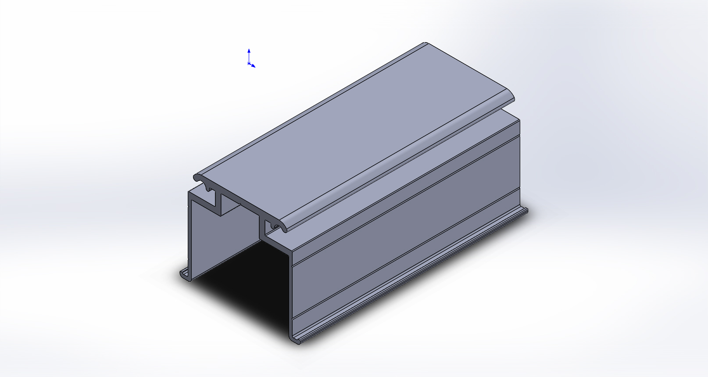

Perfil de alumínio
SS-004 — Calha Superior de Ajuste
compartilhado entre Blindex Sacadas e Unique e Vista
Dados técnicos
| Peso | 0,88 kg/m |
|---|---|
| Superfície — área | 324,75 mm²/mml |
| Superfície — perímetro | 314,3 mm²/mml |
| Inércia Jx | 54.101,29 mm⁴ |
| Inércia Jy | 91.109,08 mm⁴ |

Divergencias aplicadas (ficha individual prevalece): descricao: YAML anterior '"U" superior'.